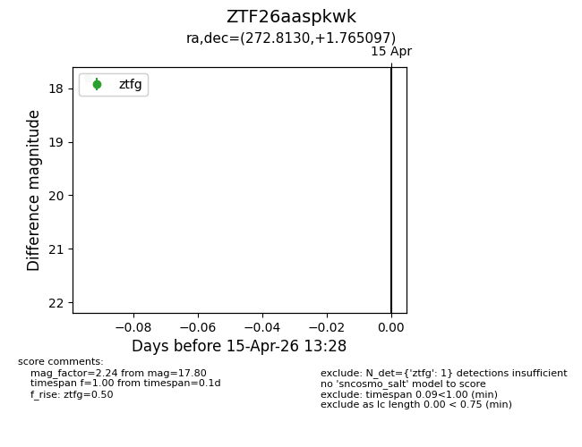
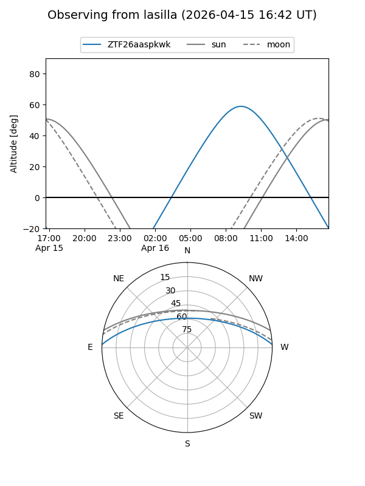
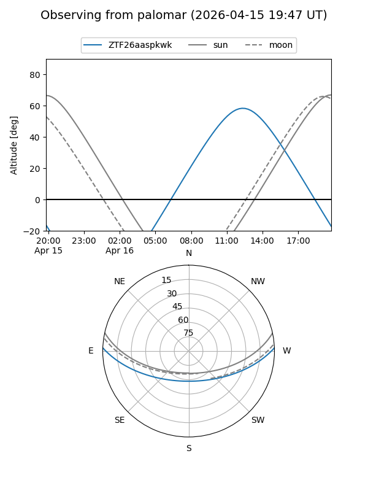

ZTF26aaspkwk
Target ZTF26aaspkwk at 2026-04-15 13:37
Aliases and brokers:
FINK: link
Lasair: link
ALeRCE: link
alt names
ZTF26aaspkwk (ztf,fink_ztf)
Coordinates:
equatorial (ra, dec) = 272.8130,+1.76510
equatorial (HMS+DMS) = 18:11:15.13,+01:45:54.35
galactic (l, b) = (29.9021,+9.74285)
Flags:
Photometry:
last ztfg=17.80
1 ztfg detections
Lightcurve

Visibility


Additional plots